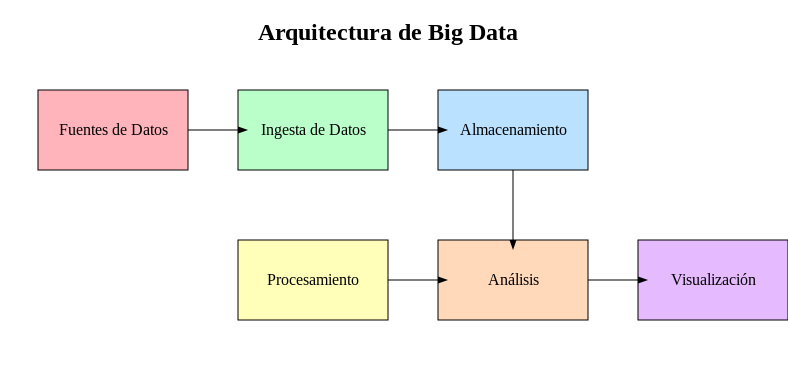

(Actualizado el 27/09/2024)
1. Introducción a Big Data
1.1. ¿Qué es Big Data?
1.1.1. Big Data
Big Data hace referencia a grandes conjuntos de datos que son tan voluminosos, variados y rápidos que las herramientas tradicionales de procesamiento y almacenamiento de datos no pueden manejarlos de manera eficiente. El concepto de Big Data engloba no solo el tamaño de los datos, sino también su complejidad, heterogeneidad y la capacidad de extraer información valiosa a partir de ellos.
El mismo término también se refiere a las nuevas tecnologías que hacen posible el almacenamiento y procesamiento, además de al uso que se hace de la información obtenida a través de dichas tecnologías.
La gran popularidad del Big Data es debida principalmente a la oportunidad que ven en ella las grandes empresas. El hecho de poder analizar millones de datos de distintas procedencias como redes sociales, imágenes digitales, emails, encuestas, logs, señales de móvil, etc., permite que la toma de decisiones sea mucho más rápida, precisa y efectiva.
1.1.2. Las 5 "V" del Big Data son:
El concepto de Big Data se suele describir a través de las "V", que capturan los principales desafíos y características de los datos en este contexto:
- Volumen:
- Se refiere a la cantidad masiva de datos generados cada segundo. Con el crecimiento de la digitalización, los dispositivos IoT, redes sociales, sensores y otros medios, se generan datos a escalas sin precedentes.
- Ejemplo: Facebook genera terabytes de datos diariamente; sensores de vehículos autónomos generan grandes volúmenes de información en tiempo real.
- Velocidad:
- Hace referencia a la rapidez con la que los datos se generan, procesan y deben analizarse. En algunos casos, los datos deben ser procesados en tiempo real o casi en tiempo real.
- Ejemplo: Los sistemas de trading de alta frecuencia en bolsa que reaccionan a eventos de mercado en milisegundos.
- Variedad:
- Los datos en Big Data provienen de diversas fuentes y pueden ser estructurados, semiestructurados o no estructurados. Esto incluye texto, imágenes, videos, audio, datos de sensores, etc.
- Ejemplo: Los correos electrónicos, tweets, imágenes de cámaras de seguridad, y archivos XML pueden ser analizados dentro de un mismo proyecto de Big Data.
- Veracidad:
- Se refiere a la calidad y confiabilidad de los datos. En Big Data, los datos pueden ser ruidosos, incompletos o ambiguos, lo que representa un desafío para asegurarse de que los análisis basados en estos datos sean precisos.
- Ejemplo: Datos de redes sociales pueden tener información no verificada, lo que requiere validación antes de ser usada.
- Valor:
- Es la "V" más importante, ya que implica la capacidad de extraer información significativa y procesable de los datos. El valor es el objetivo final del análisis de Big Data: transformar grandes volúmenes de datos en insights útiles para la toma de decisiones.
- Ejemplo: Empresas que usan análisis predictivos sobre datos de clientes para personalizar campañas de marketing.
1.2. Evolución y Origen del Big Data
Aunque el término "Big Data" se ha popularizado en la última década, el manejo de grandes volúmenes de datos tiene una historia más larga. Con el auge de Internet, el almacenamiento digital, los sensores y la explosión de la tecnología móvil, el volumen de datos generados ha crecido exponencialmente.
- Pre-2000s: El almacenamiento y procesamiento de datos estaban limitados a bases de datos relacionales, pero la cantidad de datos generada era aún manejable por tecnologías tradicionales (SQL, bases de datos relacionales, etc.).
- Década de 2000: Con la llegada de la Web 2.0, las redes sociales y el comercio electrónico, las organizaciones comenzaron a enfrentarse a desafíos para procesar y analizar estos grandes volúmenes de datos no estructurados. Surgen tecnologías como Hadoop (2005) para resolver el problema de almacenar y procesar grandes cantidades de datos distribuidos.
- Década de 2010: El crecimiento del cloud computing, el machine learning y el IoT amplió las capacidades del procesamiento masivo de datos, impulsando a las empresas a adoptar Big Data como una herramienta estratégica.
1.3. Tecnologías Clave de Big Data
Las tecnologías de Big Data incluyen un conjunto de herramientas y plataformas que permiten capturar, almacenar, procesar y analizar datos a gran escala. Estas herramientas se organizan en diferentes categorías según el tipo de operación que realizan.
Almacenamiento Distribuido
- Hadoop Distributed File System (HDFS): Un sistema de almacenamiento distribuido que permite almacenar datos masivos en clústeres de servidores, distribuyendo los datos y asegurando alta disponibilidad y tolerancia a fallos.
- Amazon S3 y Azure Data Lake: Soluciones en la nube que permiten almacenar datos no estructurados y semiestructurados a gran escala, con la capacidad de escalar según sea necesario.
Procesamiento Distribuido
- MapReduce: Un modelo de programación distribuido para procesar grandes volúmenes de datos en paralelo en un clúster de servidores. Es la base del framework Hadoop.
- Apache Spark: Una plataforma de procesamiento de datos en memoria que es mucho más rápida que MapReduce y permite realizar tanto análisis batch como procesamiento en tiempo real.
- Apache Flink: Especialmente diseñado para procesamiento de datos en tiempo real con baja latencia.
Bases de Datos NoSQL Las bases de datos NoSQL son fundamentales para manejar la naturaleza no estructurada y semiestructurada de los datos en Big Data.
- MongoDB: Base de datos documental que almacena datos en formato JSON, ideal para manejar grandes volúmenes de datos no estructurados.
- Apache Cassandra: Base de datos orientada a columnas que permite almacenar datos a gran escala y soporta la replicación de datos entre diferentes centros de datos.
- Redis: Base de datos en memoria que se utiliza para casos en los que se requiere acceso ultrarrápido a datos.
Streaming de Datos Para aplicaciones que requieren procesamiento de datos en tiempo real o near real-time.
- Apache Kafka: Plataforma de streaming distribuido que permite la ingesta, procesamiento y almacenamiento de datos en tiempo real desde múltiples fuentes.
- Apache Storm: Un motor de procesamiento en tiempo real, que permite analizar flujos de datos en vivo.
1.4. Arquitectura (Ciclo de vida) del Big Data
El ciclo de vida de Big Data incluye varias etapas que cubren desde la recopilación hasta el análisis de los datos para obtener insights valiosos.
1.4.1. Ingesta de Datos
La ingesta es el proceso de capturar datos de múltiples fuentes, que pueden ser bases de datos tradicionales, dispositivos IoT, aplicaciones web, redes sociales, etc. Este paso incluye:
Ingesta batch (por lotes): Datos capturados en intervalos regulares. Ingesta en tiempo real: Captura de datos en el momento en que se generan, mediante sistemas de streaming.
1.4.2. Almacenamiento
Los datos deben almacenarse en un formato adecuado para su posterior procesamiento. Esto puede incluir sistemas distribuidos como HDFS, bases de datos NoSQL o servicios en la nube, dependiendo del tipo y volumen de datos.
1.4.3. Procesamiento
El procesamiento transforma los datos brutos en información útil. Puede realizarse de forma batch (por lotes) o en tiempo real. Durante esta fase se limpian, transforman y agregan los datos para obtener un formato adecuado para análisis.
- ETL (Extract, Transform, Load): Proceso típico para transformar los datos en información estructurada lista para el análisis.
1.4.4. Análisis
En esta etapa, los datos procesados son analizados para extraer información valiosa. Dependiendo del tipo de análisis, se pueden usar diferentes técnicas:
- Predictivo: El análisis predictivo implica utilizar técnicas estadísticas para hacer predicciones sobre eventos futuros basándose en datos históricos. Este enfoque puede aplicarse para generar conocimientos sobre tendencias o comportamientos futuros.
- De diagnóstico: El análisis de diagnóstico utiliza algoritmos para descubrir patrones y relaciones dentro de grandes conjuntos de datos. Este enfoque puede aplicarse para extraer información útil de grandes volúmenes de datos no estructurados o semiestructurados.
-
Descriptivo: El análisis descriptivo es un método de análisis de datos que se utiliza para resumir y describir sus características principales. Se utiliza comúnmente para proporcionar una visión general de los datos y para identificar patrones y tendencias.
Uso
El análisis descriptivo puede utilizarse para obtener información a partir de conjuntos de datos grandes y complejos. Por ejemplo, una empresa podría utilizar el análisis descriptivo para entender la demografía de su base de clientes o para identificar patrones en el comportamiento de los clientes.
- Prescriptivo con Big Data: El análisis prescriptivo es un tipo de análisis de datos que utiliza técnicas avanzadas de análisis, como el aprendizaje automático y los algoritmos de optimización, para sugerir acciones que se pueden tomar para lograr un resultado deseado.
Uso
El análisis prescriptivo puede utilizarse para tomar decisiones basadas en datos a partir de la información obtenida a partir de conjuntos de datos grandes y complejos. Por ejemplo, una empresa podría utilizar el análisis prescriptivo para optimizar su cadena de suministro o para determinar la mejor estrategia de precios para sus productos.
1.4.5. Visualización y Toma de Decisiones
La visualización de datos es la presentación de datos de manera visual a través de dashboards, cuadros de mando o informes que facilitan la toma de decisiones informadas. Herramientas como Tableau, Power BI, o Qlik son comunes en esta fase.
Hay muchas herramientas disponibles para la visualización de Big Data. Algunas de las herramientas más populares son Tableau, Power BI, Infogram, ChartBlocks, Datawrapper y Ploty. Estas herramientas permiten crear tablas, gráficos, mapas y otros tipos de visualizaciones para ayudar a comprender y comunicar los datos.
La visualización de datos es importante porque permite transmitir conceptos de manera universal y rápida. También puede ayudar a identificar áreas que necesitan atención o mejoras y esclarecer qué factores influencian el comportamiento de los clientes.

1.5. Aplicaciones y Casos de Uso de Big Data
Big Data se utiliza en una gran variedad de sectores, cada uno aprovechando los datos masivos para obtener beneficios estratégicos:
- Sector Salud: Análisis de grandes volúmenes de datos médicos para mejorar diagnósticos, predecir epidemias, y personalizar tratamientos.
- Marketing y Publicidad: Segmentación avanzada de clientes, campañas de marketing personalizadas, análisis de comportamiento del consumidor en tiempo real.
- Finanzas: Análisis de datos transaccionales y mercados financieros en tiempo real para detectar fraudes, prever riesgos y optimizar inversiones.
- Gobierno y Smart Cities: Gestión de infraestructuras urbanas y servicios públicos mediante el análisis de datos provenientes de sensores, cámaras y otras fuentes en tiempo real, mejorando la eficiencia en áreas como transporte y energía.
1.6. Desafíos del Big Data
A pesar de sus beneficios, Big Data presenta importantes desafíos para las organizaciones:
- Privacidad y seguridad: Manejar grandes volúmenes de datos, especialmente datos sensibles como información personal, requiere sistemas robustos de protección y cumplimiento normativo, como el GDPR.
- Escalabilidad: A medida que los volúmenes de datos crecen, los sistemas deben escalar para mantener la capacidad de almacenamiento y procesamiento.
- Complejidad: Trabajar con datos de diversas fuentes, formatos y calidad requiere herramientas sofisticadas para integrarlos y analizarlos de manera eficiente.
Actividad Takeout
1. Accede a los datos
- Accede a Google Takeout https://takeout.google.com/
- Para simplificar selecciona las siguientes exportaciones:
- Access log activity
- Chrome
- Google Account
- Google Pay
- My Activity
2. Estudia los datos descargados
- Despues de 24 horas tendrás los datos disponibles en tu correo
- Descargalos
3. Analiza los ditintos tipos de datos
- Estudia los datos recibidos
- Volumen
- Velocidad
- Variedad
- Veracidad
- Valor
4. Plantea Analisis de datos
- Despues de estudiar los datos diseña posibles analisis de datos
5. Plantea Procesamikento
- Despues de definir los analisis de datos
- Describe el procesamiento de los datos para preparar las visualizaciones
6. Plantea Visualizaciones
- Diseña posibles visualizaciones de los datos